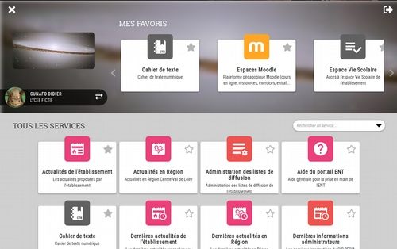

Dans la journée de mercredi prochain, 12 septembre, la navigation dans le portail ENT va changer.
Le système arborescent actuel va disparaître pour laisser la place à une présentation des services plus ergonomique et intuitive,
il n'y aura plus besoin de savoir dans quel rubrique se trouve tel ou tel service après avoir cliqué sur le bouton du menu menu.
L'ensemble des services, triés par ordre alphabétique, seront présentés sous forme de cartes et il sera possible de chercher un service par mot clé
ou en choisissant une catégorie dans la zone de "recherche/sélection de catégorie" :

Chaque utilisateur pourra sélectionner ses services favoris en cliquant sur l'étoile présente sur la carte de description du service.
Il pourra supprimer un service de ses favoris de la même façon...
La documentation en ligne du portail ENT est modifiée en conséquence et chaque utilisateur peut y avoir accès via la liste des services qui lui est proposée.